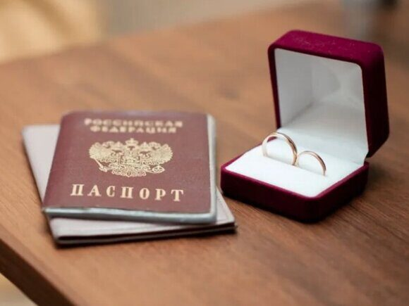

« НазадКак поменять паспорт после свадьбы: полный гайд Свадебный вальс отзвучал, шампанское выпито, фотографии с счастливыми лицами молодоженов украшают социальные сети. Наступает пора романтического медового месяца… или погружения в пучину бюрократических процедур? Многие невесты, выбравшие новую фамилию, сталкиваются с необходимостью замены целого ряда документов, и паспорт – главный из них. Перспектива беготни по инстанциям, очередей и заполнения бесчисленных анкет может омрачить даже самые радостные послесвадебные дни. Но не стоит паниковать! Наш подробный гайд развеет все ваши страхи и поможет легко и быстро пройти процедуру смены паспорта после замужества. Мы расскажем, какие документы необходимо собрать, куда обращаться, какие сроки ожидать и на какие нюансы обратить особое внимание. Шаг за шагом, от момента получения свидетельства о браке до получения новенького паспорта с вашей новой фамилией, мы проведем вас через весь процесс, сэкономив ваше время, нервы и помогая избежать распространенных ошибок. Паспорт РФСроки заменыЗаконодательство Российской Федерации обязывает граждан, изменивших фамилию в связи с регистрацией брака, заменить паспорт в течение 90 дней с момента заключения брачного союза. Это означает, что отсчет начинается не с даты подачи заявления в ЗАГС, а именно с дня официальной регистрации брака, который указывается в свидетельстве о браке. По истечении этого 90-дневного срока документ, удостоверяющий личность, с предыдущей фамилией становится недействительным. Использование недействительного паспорта влечет за собой административную ответственность в виде штрафа. Размер штрафа варьируется в зависимости от региона проживания. В большинстве регионов России штраф за просрочку замены паспорта составляет от 2000 до 3000 рублей. Однако, в городах федерального значения – Москве и Санкт-Петербурге – предусмотрены более высокие штрафы, составляющие от 3000 до 5000 рублей. Это связано с особым статусом этих городов и, как следствие, более строгим контролем за соблюдением законодательства. Важно помнить, что несвоевременная замена паспорта может создать трудности в различных жизненных ситуациях: при оформлении банковских операций, получении социальных выплат, покупке билетов на транспорт, заключении договоров и других юридически значимых действиях. Поэтому рекомендуется заранее позаботиться о замене паспорта и обратиться в соответствующие органы в установленный законом срок. Куда обращатьсяМФЦ (Многофункциональный центр): Удобный вариант, позволяющий подать документы с предварительной записью (в некоторых МФЦ электронная очередь) и получить готовый паспорт там же. Минусы: возможно придется подождать в очереди. Отдел УВМ МВД (Управление по вопросам миграции МВД РФ): Можно обратиться напрямую в территориальное отделение МВД (зависит от региона). Плюсы: зачастую быстрее, чем в МФЦ. Минусы: необходима предварительная запись, сложнее найти ближайшее отделение, чем МФЦ. Госуслуги (портал государственных услуг): Самый быстрый и удобный способ, опять же в зависимости от региона. Заполняете заявление онлайн, загружаете фото, оплачиваете госпошлину. Вам останется только выбрать удобное время для посещения МВД для подачи оригиналов документов и получения паспорта. Необходима подтвержденная учетная запись на Госуслугах. Необходимые документы
Процедура подачи документовЛично: Выбираете удобный способ подачи (МФЦ, МВД), собираете необходимые документы, оплачиваете госпошлину, приходите в выбранное учреждение, заполняете заявление (если не заполнили заранее), подаете документы, получаете временное удостоверение личности (при необходимости). Онлайн (через Госуслуги): Авторизуетесь на портале, выбираете услугу «Получение паспорта гражданина РФ», заполняете электронную форму заявления, загружаете фотографию, оплачиваете госпошлину онлайн со скидкой, выбираете удобное время и место для подачи оригиналов документов и получения паспорта. Сроки получения нового паспорта
На практике до 3-х недель. Временное удостоверение личностиВыдается по запросу на период оформления паспорта. Для получения необходимо предоставить дополнительно фотографию 35х45 мм. Временное удостоверение личности подтверждает вашу личность и позволяет совершать некоторые юридически значимые действия. Другие документыСмена фамилии после заключения брака — это важный шаг, который требует не только изменения паспорта, но и корректировки множества других документов. Каждый из них играет свою роль в вашей жизни, и важно понимать, какие именно изменения необходимо внести и куда обращаться для их осуществления. Давайте рассмотрим основные документы, которые требуют изменения, кроме паспорта гражданина РФ. СНИЛС (Страховой номер индивидуального лицевого счета)Замена: Требуется, меняются только данные. Куда обращаться:
Необходимые документы:
Сроки: Обычно процесс занимает несколько дней. ИНН (Идентификационный номер налогоплательщика)Замена: Не требуется, данные не меняются. Куда обращаться:
Необходимые документы:
Сроки: Обычно несколько дней. Полис ОМС (Обязательное медицинское страхование)Замена: Да, полис необходимо заменить. Куда обращаться:
Необходимые документы:
Сроки: Изготовление нового полиса может занять до 30 рабочих дней. Через портал Госуслуги 1 день. Заграничный паспортЗамена: Да, если вы планируете использовать заграничный паспорт. Куда обращаться:
Необходимые документы:
Сроки: Изготовление нового заграничного паспорта занимает до 30 рабочих дней при обращении по месту постоянной регистрации и до 3 месяцев при обращении не по месту жительства. Водительское удостоверениеЗамена: Да, необходимо заменить. Куда обращаться:
Необходимые документы:
Сроки: Обычно замена удостоверения осуществляется в день обращения. Банковские картыЗамена: Да, необходимо обновить информацию. Куда обращаться:
Необходимые документы:
Сроки: Зависит от банка, обычно занимает несколько дней. Трудовая книжка (при необходимости)Кто делает запись: Работодатель. Необходимые документы:
Другие документыПри наличии других документов, таких как:
Смена фамилии — это не только радостное событие, но и необходимость внести изменения в множество документов. Чтобы избежать проблем в будущем, рекомендуется заранее подготовить все необходимые документы и обращаться в соответствующие организации. Это поможет вам быстро и без лишних хлопот адаптироваться к новой фамилии. Полезные советы
FAQ о замене паспорта при смене фамилии после заключения брака
Ответ: Паспорт — это основной документ, удостоверяющий личность гражданина. При смене фамилии важно обновить паспорт, чтобы он соответствовал вашим актуальным данным. Это необходимо для избежания проблем с идентификацией личности в будущем.
Ответ: Согласно законодательству РФ, граждане обязаны заменить паспорт в течение 90 дней с момента изменения фамилии. Если вы не успеете это сделать в указанный срок, это приводит к административным штрафам.
Ответ: Для замены паспорта вам понадобятся:
Ответ: Документы можно подать в отделение УВМ МВД по месту жительства, в многофункциональный центр (МФЦ) или через портал Госуслуг. Важно уточнить, какие именно учреждения принимают документы в вашем регионе.
Ответ: Процесс замены паспорта занимает 5 рабочих дней, но на практике от 10 до 30 рабочих дней. В некоторых случаях, если документы поданы через Госуслуги, срок может быть сокращен.
Ответ: На момент 2024 и 2025 года стоимость государственной пошлины за замену паспорта составляет 300 рублей. Однако, рекомендуется проверить актуальные тарифы на сайте МВД или в вашем отделении МФЦ, так как они могут изменяться.
Ответ: Если вы потеряли Свидетельство о заключении брака, вам нужно будет получить повторное (дубликат) этого документа в ЗАГСе, где вы регистрировали брак, или в отделении МФЦ. Без него вы не сможете заменить паспорт на новую фамилию.
Ответ: Да, вы можете заменить паспорт по другим причинам, например, если он пришел в негодность, истек срок действия или вы обнаружили несоответствие своих персональных данных (например, если данные в паспорте не соответствуют данным в свидетельстве о рождении). В этом случае вам также понадобятся соответствующие документы.
Ответ: Если срок замены паспорта истек, вам следует как можно скорее обратиться в МФЦ для замены. Возможно, вам придется заплатить штраф за просрочку, но лучше решить вопрос как можно быстрее.
Ответ: Нет, если вы находитесь за границей, вы можете обратиться в Консульство или Посольство России для получения Свидетельства на возвращение в РФ. Процедура получения нового внутреннего паспорта РФ в Консульстве МИД РФ за пределами России не предусмотрена. ЗаключениеСмена документов после замужества – процесс, требующий времени и внимания. Однако, следуя нашему гайду и заранее подготовившись, вы сможете справиться с этой задачей без лишних хлопот. Желаем вам удачи в оформлении документов и счастливой семейной жизни! Срочное оформление паспорта РФ при смене фамилии после заключения бракаПосле свадьбы многие молодые пары принимают решение сменить фамилию, что может быть связано как с традициями, так и с личными предпочтениями. Если вы тоже столкнулись с необходимостью заменить паспорт РФ после изменения фамилии, паспортно-визовый центр "Север" готов прийти вам на помощь. Мы работаем на рынке более 20 лет и за это время накопили богатый опыт в оказании услуг по оформлению документов. Наша команда профессионалов гарантирует безупречный результат, избавляя вас от лишних хлопот. Смена фамилии может быть довольно хлопотным процессом, особенно если вы не знакомы с бюрократическими тонкостями. В паспортно-визовом центре "Север" мы понимаем, что время – это ценный ресурс, поэтому стараемся минимизировать ваши затраты на него. Забудьте об утомительных очередях и сложных формальностях! Мы берем на себя все заботы, связанные с оформлением нового внутреннего паспорта, начиная от сбора необходимых документов и заканчивая подачей заявки в соответствующие органы. Наш офис удобно расположен в центре Москвы, что позволяет легко добраться до нас и сэкономить ваше время. Вы можете записаться на консультацию, позвонив по номеру +79255854195, или посетив наш сайт passport-1.com, где вы найдете всю необходимую информацию. Мы готовы ответить на все ваши вопросы и помочь вам на каждом этапе процесса. Замена паспорта после брака с нами – это не только просто, но и быстро. Мы понимаем, что в жизни бывают ситуации, когда необходимо оперативно решить вопросы с документами, и именно поэтому мы предлагаем гибкие условия обслуживания. Мы поможем вам не только с заменой паспорта, но и с другими документами, которые могут потребоваться после смены фамилии. Также, при необходимости, поможем оперативно, за 3 дня получить дубликат, или повторное Свидетельство о браке с QR-кодом в случае утери. Обращайтесь к нам, и убедитесь, что процесс смены фамилии может быть легким и приятным!
|
Комментарии
Комментариев пока нет